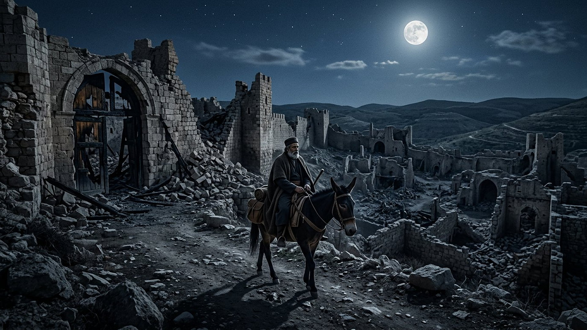
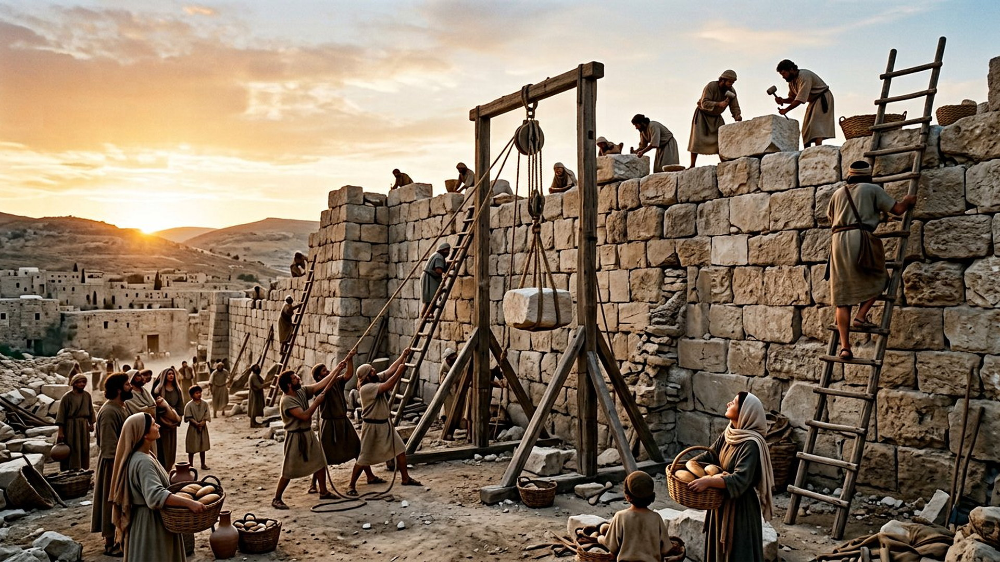
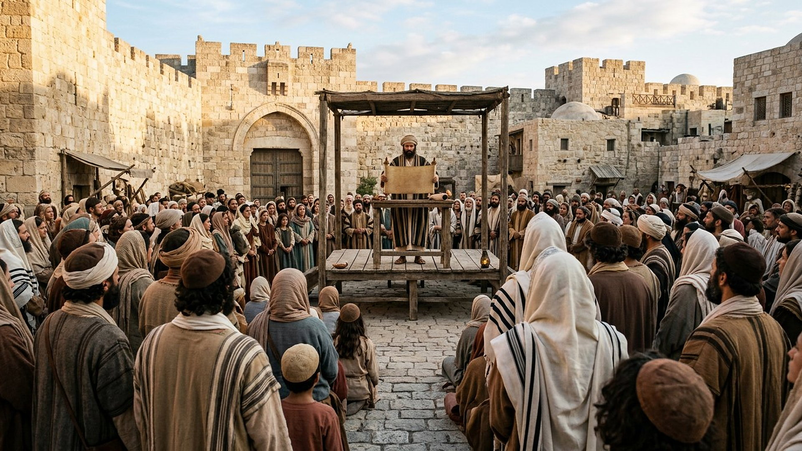

Salle 52 — Livre de Néhémie ACCOMPLIE
Néhémie : relever les murailles
« Le Dieu des cieux, lui, nous donnera le succès ; et nous, ses serviteurs, nous nous lèverons et nous bâtirons. » — Néhémie 2:20 (traduction personnelle fidèle)
Reconstitution numérique — l'inspection de nuit (Néhémie 2:12-15) : une monture, des portes brûlées, et un projet encore tenu secret.
Un échanson de Suse devant des ruines vieilles d'un siècle
Plus d'un siècle après la destruction de Jérusalem, Néhémie (en hébreu, translittération : Nĕḥemyāh), échanson du roi Artaxerxès (translittération : ʾArtaḥšastāʾ) à Suse, apprend que les rapatriés de Juda vivent « dans une grande misère et dans l'opprobre » : la muraille de Jérusalem est en brèches et ses portes ont été brûlées. Après quatre mois de prière, il obtient du roi lettres de passage et bois de charpente, inspecte les ruines de nuit, puis lance le chantier : familles, prêtres, orfèvres et parfumeurs bâtissent chacun devant sa maison, sous les moqueries puis les menaces de Sanballat (translittération : Sanḇallāṭ), gouverneur de Samarie, et de ses alliés. On travaille « une main à l'ouvrage, l'autre à l'arme », on déjoue complots et fausses prophéties, et la muraille est achevée en cinquante-deux jours. Néhémie, devenu gouverneur, réforme ensuite les abus — dettes, esclaves pour dettes, dîme négligée — et assiste, aux côtés d'Esdras (translittération : ʿEzrāʾ), à la lecture publique de la loi devant tout le peuple (Néhémie 1 à 13, résumé sobre).
Dans la lecture retenue par ce musée, cette salle est la charnière entre l'exil et le compte à rebours messianique : c'est en effet le décret d'Artaxerxès autorisant la reconstruction de Jérusalem que la salle des soixante-dix semaines retient comme point de départ des soixante-neuf semaines d'années conduisant au Messie (Daniel 9:25). La chronologie de Néhémie et les pièces perses du dossier sont présentées ci-dessous avec leurs débats.
Le récit en cinq temps
De la coupe du roi aux portes refermées, avancez d'une station à l'autre.

Le banc des preuves : des papyrus qui nomment l'adversaire
DÉBATTU
Les papyrus d'Éléphantine : les fils de Sanballat nommés vers 407 (EV-61)
Sur l'île d'Éléphantine (en Égypte, translittération arabe : Jazīrat Aswān), la garnison juive au service de la Perse a laissé des lettres sur papyrus et ostraca. L'une d'elles, adressée vers 407 avant notre ère au gouverneur de Juda, mentionne comme autorités voisines les fils de « Sanballat, gouverneur de Samarie » — le nom et la fonction de l'adversaire de Néhémie, une génération plus tard. Vérifié : le milieu administratif perse et la dynastie samaritaine du récit ont laissé des traces indépendantes. Débattu : la chronologie exacte de Néhémie (les missions sont datées des années 20 et 32 d'Artaxerxès, dont l'identification — Ier ou II — déplace le chantier de 445 à 398 environ) et l'ampleur réelle des murailles perses, dont les vestiges à Jérusalem restent ténus et discutés.
LECTURE PROPHÉTIQUE
Le décret qui fait partir le compteur des semaines
Daniel avait annoncé : « depuis la sortie de la parole pour rétablir et rebâtir Jérusalem jusqu'au Messie, le Conducteur, il y a sept semaines et soixante-deux semaines » (Daniel 9:25, traduction personnelle). La salle des soixante-dix semaines expose pourquoi le musée retient, parmi les décrets perses candidats, celui d'Artaxerxès en faveur de Néhémie — le seul qui vise la ville et ses murailles, et non seulement le temple. La présente salle montre l'homme et le chantier derrière cette date de départ, sans refaire le calcul.
FAIT ARCHÉOLOGIQUE
Une Jérusalem perse petite, une muraille débattue
Les fouilles de la cité de David montrent une Jérusalem de l'époque perse très réduite, concentrée sur la colline orientale — cohérente avec le tableau d'une ville pauvre et peu peuplée que donne le livre. Des tronçons de fortification attribués à cette phase ont été proposés, mais leur datation est discutée entre spécialistes, et le tracé complet de la muraille de Néhémie ne peut pas être suivi au sol comme celui des murailles hérodiennes postérieures. La salle distingue donc le récit, le cadre urbain attesté et le segment de mur encore hypothétique.
Quatre clés pour bien lire le livre de Néhémie
1. La prière et le palan, sans les opposer
Néhémie prie quatre mois avant de parler au roi, prie encore « au Dieu des cieux » au moment de répondre (2:4), puis organise relèves, gardes et ravitaillement avec un soin d'ingénieur. Le livre ne connaît pas l'alternative entre foi et compétence : le succès final est confessé comme don (« ils reconnurent que cette œuvre s'était faite par notre Dieu », 6:16) et construit comme un chantier.
2. Des murailles avant tout sociales
Le chantier est organisé par maisons : chaque famille relève le pan devant chez elle, filles comprises (3:12). Et avant même l'achèvement, Néhémie affronte le front intérieur — les nobles qui accablent les pauvres de dettes et prennent leurs enfants en gage ; il leur fait rendre champs, vignes et intérêts, et donne l'exemple en refusant l'impôt du gouverneur (Néhémie 5). La muraille ne protège une ville que si la justice y habite.
3. L'opposition, du sarcasme au complot
Sanballat et Tobija (translittération : Ṭôḇiyyāh) escaladent par degrés : raillerie (« même un renard ferait crouler leur muraille », en substance), conspiration armée, lettres ouvertes calomnieuses, faux prophète acheté pour faire peur. Le livre documente une résistance administrative et psychologique plus que militaire — ce que confirment en arrière-plan les rivalités de provinces que montrent les papyrus d'Éléphantine.
4. Une fin en lecture publique, pas en triomphe
Le chantier s'achève, mais le livre culmine ailleurs : Esdras lit la loi « dès l'aube jusqu'au milieu du jour » devant hommes, femmes et enfants capables d'entendre, les Lévites expliquent le sens, le peuple pleure puis est renvoyé à la joie et aux parts pour les pauvres (Néhémie 8). La ville relevée reçoit une constitution lue à voix haute — écho direct de l'alliance du Sinaï (salle 47), où tout avait commencé par une proclamation publique.
Prescience n'est pas fatalité — cinquante-deux jours de décisions
Rien n'obligeait l'échanson à risquer sa faveur à la cour, ni les familles à bâtir sous les menaces, ni le gouverneur à effacer les dettes des puissants. La date que Daniel avait annoncée ne relevait pas les pierres toute seule : elle a rencontré des volontés, une à une, jour après jour. La prescience fixe un rendez-vous ; la liberté décide qui s'y présente.

La salle des soixante-dix semaines : le compteur que ce décret fait partir · Salle 47 : l'alliance proclamée, relue ici publiquement · Salle 51 : l'autre cour de Perse, une génération d'histoires plus tôt
Écouter la salle
Transcription de la narration
Bienvenue dans cette nouvelle salle. Vous verrez d'abord un cavalier solitaire inspectant de nuit des murailles en ruines au clair de lune, puis des ouvriers relevant de grands blocs de Pierre à l'aube, et enfin une foule écoutant une lecture publique. Bonne visite. La visite avance en cinq étapes courtes. Prenez le temps d'observer chaque image et de lire les panneaux : ils présentent un chantier de cinquante-deux jours, des lettres anciennes écrites sur papyrus, et les questions des spécialistes. Merci de votre attention.